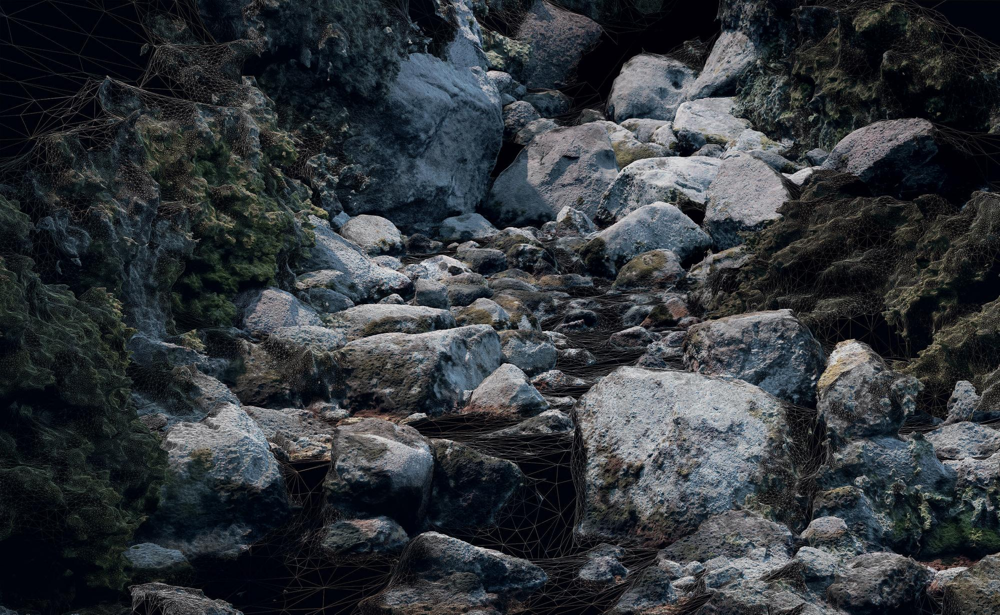
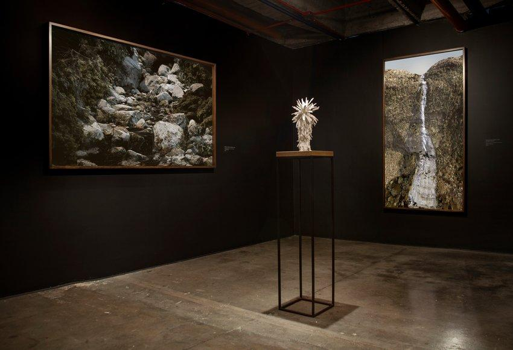
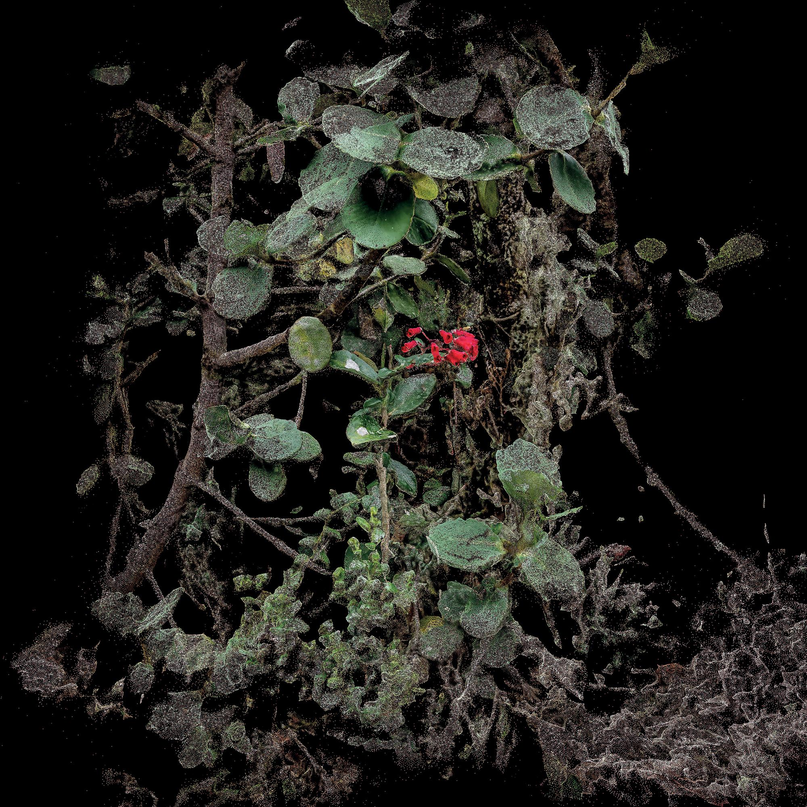
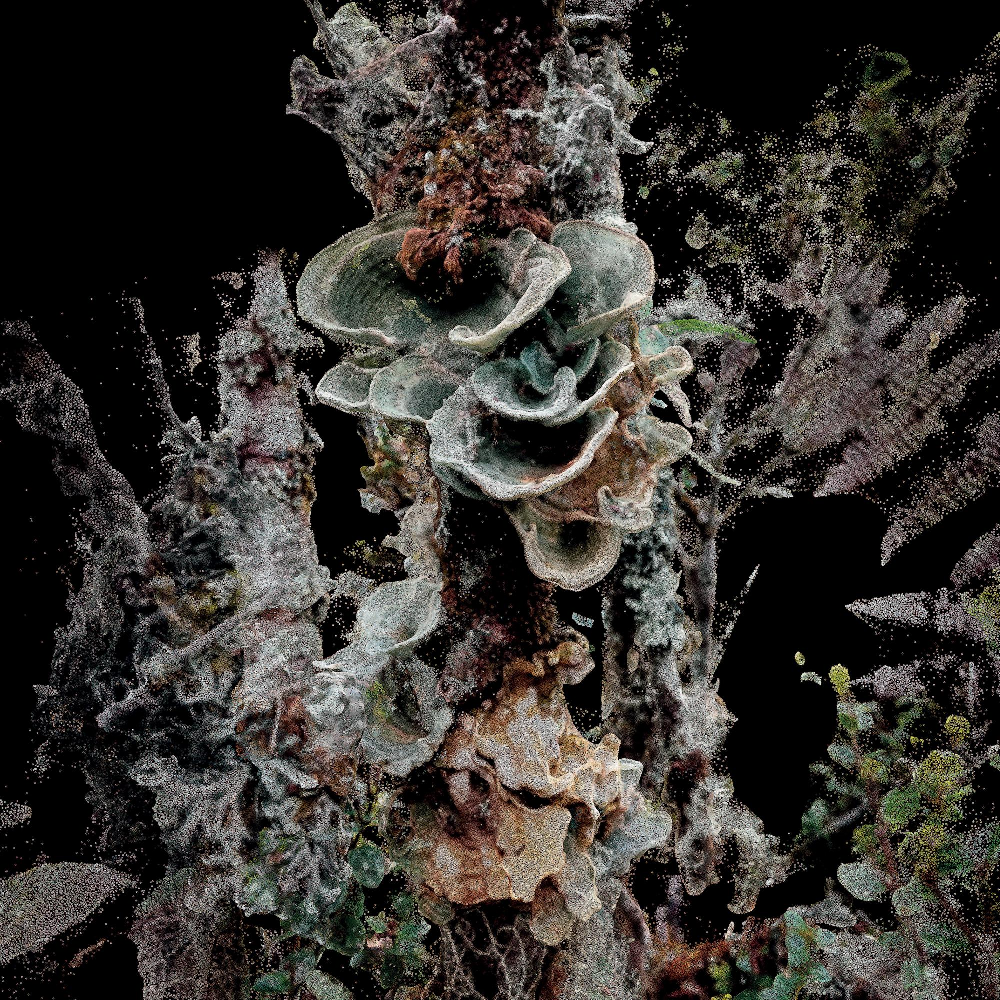
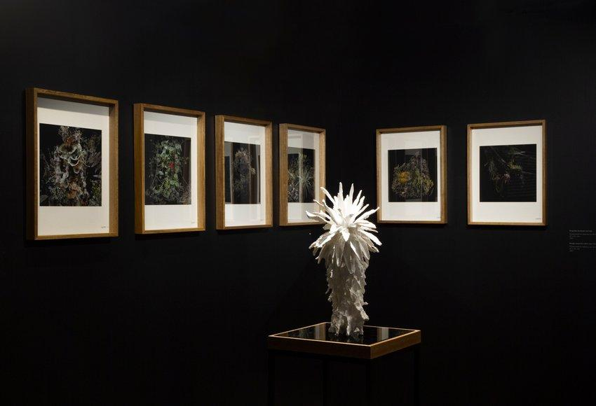
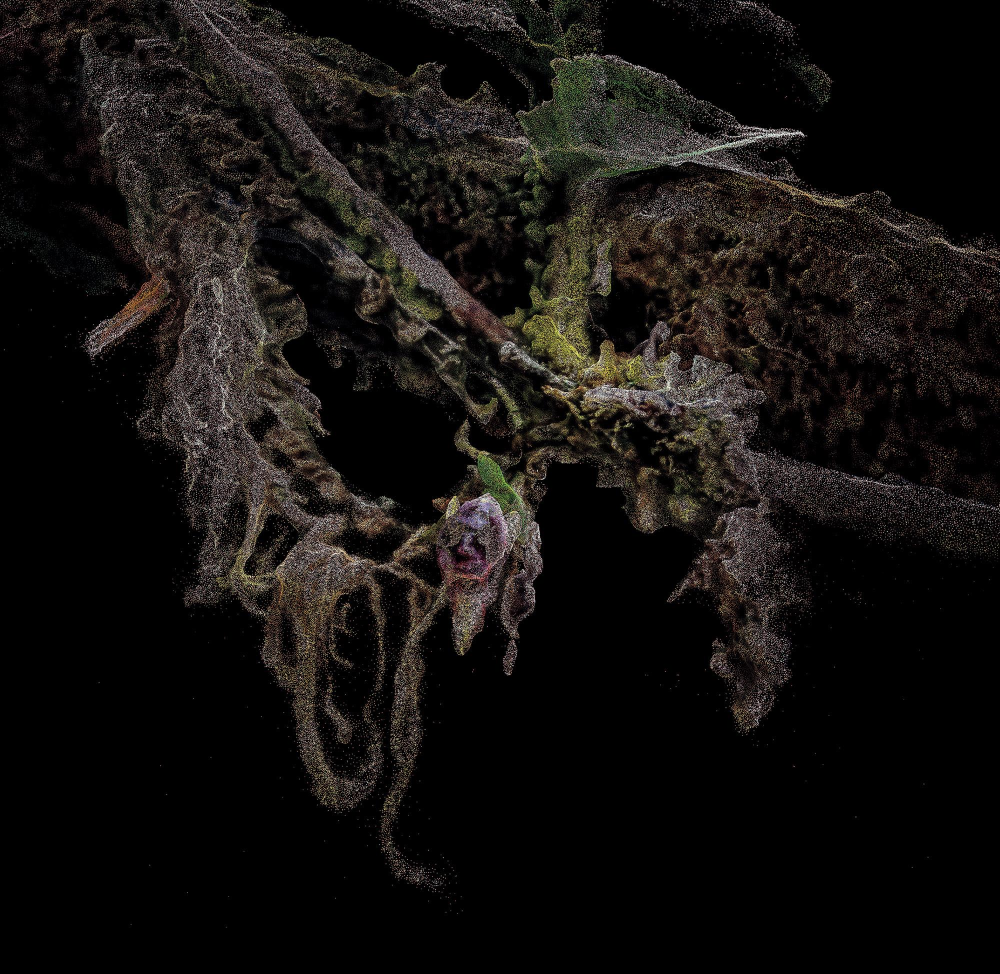
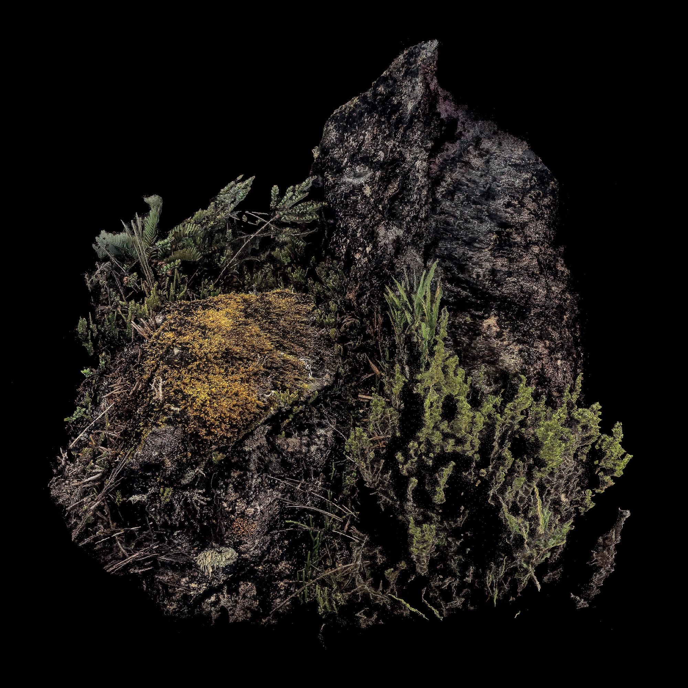
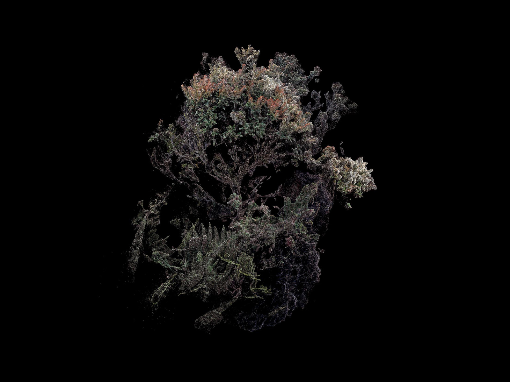
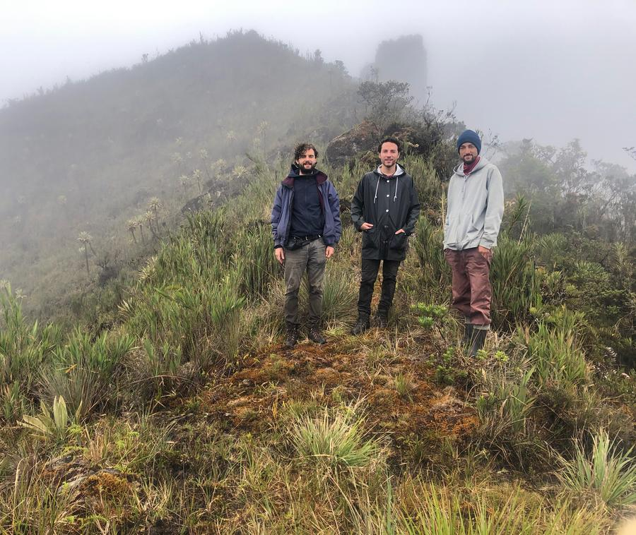
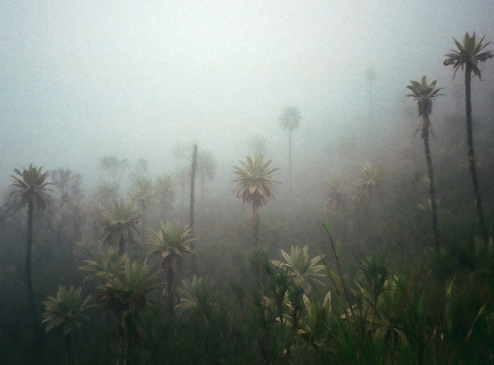

BOGOTÁ. CO
(2021)
DÓNDE EL PAISAJE
SE HACE AGUA.
The cold, the tiredness, the radiant sun, or the freezing rain that you feel to the bone. The fog that erases the path, the frailejones, the lagoon, the waterfalls, the forests, and the mountains. The paramos are elevated rock formations - located in the tropics of our planet - ideal for the genesis of life. A mixture of sun, water, and minerals provides sustenance for all the inhabitants of Bogotá and its surroundings.
"Allí donde el paisaje se hace agua", is a project that proposes a view of the Paramo de Chingaza through a technique that interprets and translates the landscape generating a dialogue between the binary and the organic: it exposes a contemporary interpretation of nature. These light measurements reveal the most detailed forms of the stones, trace the geography of the mountain, and get lost in front of the elusive bodies of water.
The project seeks to expand the properties of photography and to deepen the study of imperceptible shapes, textures, and colors; to obtain a three-dimensional, almost cartographic representation of flora and landscape. These pieces constitute a different approach to the framing of the natural environments that surround us.
"Allí donde el paisaje se hace agua", is a project that proposes a view of the Paramo de Chingaza through a technique that interprets and translates the landscape generating a dialogue between the binary and the organic: it exposes a contemporary interpretation of nature. These light measurements reveal the most detailed forms of the stones, trace the geography of the mountain, and get lost in front of the elusive bodies of water.
The project seeks to expand the properties of photography and to deepen the study of imperceptible shapes, textures, and colors; to obtain a three-dimensional, almost cartographic representation of flora and landscape. These pieces constitute a different approach to the framing of the natural environments that surround us.
A PROJECT BY: ÁLVARO RODRÍGUEZ & JUAN DAVID FIGUEROA
SALA DE PROYECTOS GALERÍA LA COMETA
SALA DE PROYECTOS GALERÍA LA COMETA









